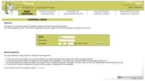
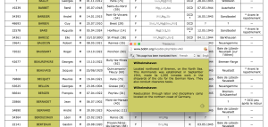
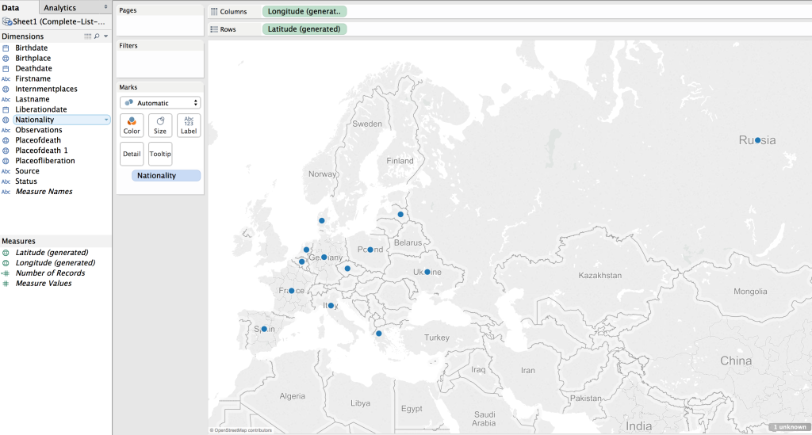
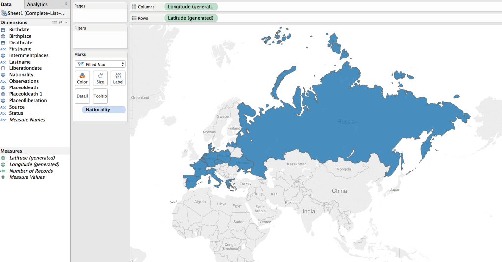
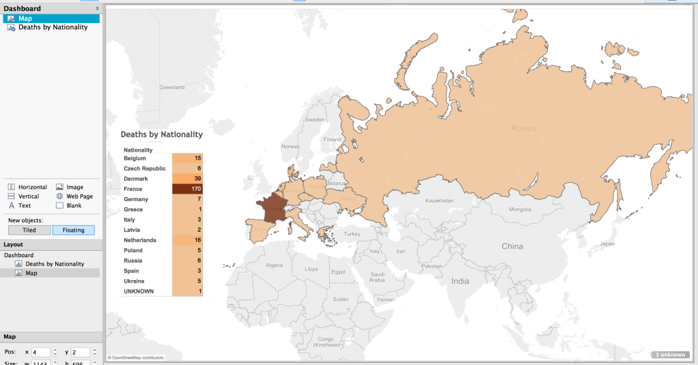

Introduction
Visual representations of data offer a quick way to express a lot of information. As the old adage goes, a picture is worth a thousand words. One of the facets of digital humanities research is providing information in the form of visuals: graphs, maps, charts, etc.
I was already writing up some notes on a visualization I was creating for the dissertation when I read this excellent blog post by Fred Gibbs (a version of a presentation at the AHA 2015). In this essay I think Fred accurately identifies the digital humanities field as one in need of stepping up to the next level. It is no longer enough to present visuals as humanities research, but it is time to start critiquing what is presented, and for researchers to start explicitly explaining the choices that went into creating that visualization.
With those thoughts in mind, I present the methodology, the decisions, and the visualization of over 200 deaths at the KZ Porta Westfalica Barkhausen, during a one year period.
A change is happening (at least for me) in how data is analyzed. I have a spreadsheet of over 200 deaths, with various information, death date, location, nationality, etc. The desire to create a visualization came from wanting to understand the data and see the commonalities and differences. The first question I had was how many nationalities are represented, and which countries. The second question is what is the distribution of the deaths by month.
The following is how I came to a visualization that answers the first question.
Data Compilation
Data is taken from two locations and merged.
- The first set of data is a large spreadsheet obtained from the KZ Neuengamme Archiv containing all of their data on the prisoners that died and were at KZ Neuengamme or one of the satellite camps. This file contains 23,393 individuals.
- The second data set is another set of files from KZ Neuengamme Archiv, but is derived from a list compiled by French authorities. It is available online at: http://www.bddm.org/liv/index_liv.php. The files were split into three sections listing the dead from Barkhause, Porta Westfalica, and Lerbeck. These files contained a total of 177 individuals.
Combining just the individuals matching those who were in a Porta Westfalica KZ from both sets of data left around 280 individuals.
Data Cleaning
There were a number of steps needed in order to have useful information from the data.
- First of all, the data from the French archive was highly abbreviated. For example, the column containing the locations of internment were two or three letter abbreviations of location names. Elie Barioz, for example, had the locations “Wil, Ng (Po, Bar)” which, when translated, turn into “Wilhelmshaven, Neuengamme (Porta Westfalica, Porta Westfalica-Barkhausen)”
- The process of translating the abbreviations was quite labor intensive. First, I had to search on the French site for an individual:Â http://www.bddm.org/liv/recherche.php
- Search for ‘Barioz’. Note: The Chrome web browser can automatically translate the pages on this site.
- The correct individual can be determined by comparing the full name and the birthdate. The citation to the location in the book is a hyperlink to that record (ex. Part III, No. 14 list. (III.14.)).

- The abbreviations for this individual’s interment locations are hyperlinks to more information, part of which is the full name of the location. Clicking on ‘Wil’ results in a pop up window describing the KZ at Wilhelmshaven and information about the city.
 - After determining that ‘Wil’ meant ‘Wilhelmshaven’, all occurrences of ‘Wil’ in that column can be changed to ‘Wilhelmshaven’.This process is repeated until all of the abbreviations have been translated.
- Remove extraneous asterisks. It was quite frustrating to note that the French site did not include information on what the asterisk and other odd symbols mean. (Another odd notation is the numbers in parenthesis after the birth location.) I had to simply just delete the asterisks, losing any possible meaning they might have had.
- Combine duplicates. Keep as much information from both records as possible.
- Fix dates. They should all be the same format. This is tricky, in that Europe keeps dates in the format MM-DD-YYYY. For clarity sake, it would be best to use “Month DD, YYYY”. I left them as is for now. Editing 280 dates is not fun…
- Fix nationality. The Tableau software references current nations. The data in the spread sheets uses nations current to the time of creation. For example, some individuals were noted with the nationality of ‘Soviet Union (Ukraine)’. These needed to be brought to the present as ‘Ukraine’. More problematic were the individuals from ‘Czechoslovakia’. Presently, there is the Czech Republic and Slovakia. The question is, which present day nationality to pick. There is a column for birth place which potentially solves the issue, but this field is for where the individual was born, wich, in the case of Jan Siminski, is seen. He was born in the Polish town of Obersitz (German translation), so the birth place can not clarify his nationality as Czech or Slovakian.
- This brings up another issue, the translation of place names. City names in German, especially during the Third Reich, are different than current German names for the city, which are different than the English name of the city, which are different than what the nation calls the city. I need to standardize the names, picking, probably English. Tableau seemed to have no problem with the ethnic city names, or the German version, so I left them as is.

Tool Picking
I used the free program, Tableau Public:Â http://www.tableau.com/
This allows for very quick visuals, and a very easy process. The website has a number of free tutorials to get started. http://www.tableau.com/learn/training
Map
The first visualization I wanted to make was a map showing where the prisoners were from, their nationality. The map would also show the number of prisoners from each country. (This is not a tutorial on how to use Tableau, but a walk through of the pertinent choices I made to make sense of the data, it is methodology, not tech support. 🙂 )
Using the default settings (basically, just double clicking on the Nationality field to create the map) results in a dot on each country represented in the data.

This can be transformed into a polygon highlight of the country by selecting a “Filled Map”.

Next step was to apply shading to the filled map; the larger the number of prisoners who died from that country the darker the fill color.

The default color was shades of green. I wanted a more dull color to fit in with the theme of the visualization, “death”. I picked a light orange to brown default gradient, separated into 13 steps (there are 13 countries represented).
Table
While just a filled map with gradient colored countries is helpful, the information would be more complete, more fully understandable, with a legend. This can be created by using a plane table listing the countries and the number of dead from that country. Each row is color coordinated with the map by using the same color scheme and number of steps as with the map.

Dashboard
In Tableau, you create a dashboard to combine the different work sheets, maps, tables, graphs, etc. In this case, a full page map, with the table overlaid completes the visualization.
Result
The result is a very simple map, created in about ten minutes (after a few video tutorials to refresh my memory on how to create the affects I wanted).
(See a fully functioning result below this image.)

Benefits of Tableau
Tableau has some limitations. The results are hosted on their servers, which has the potential for lock down. They use proprietary, closed source code and applications.
But there are many benefits. The default visualizations look great. It is very easy to create simple and powerful visualizations. The product is capable of producing very sophisticated statistical representations. You can use the free and open source stats program R. The visualizations are embed-able in any website using Javascript.
The biggest benefit of using Tableau is the automatic link back to the original data source. I think the most needed shift in humanities (particularly the history profession), and the biggest benefit of “digital” capabilities for the humanities, is the ability to link to the source material. This makes it infinitely more easy for readers and other scholars to follow the source trail in order to provide better and more accurate feed back (read critique and support).
To see the underlying data in this visualization, click on a country in the map or the table. A pop up window appears with minimal data.

Click on the “View Data” icon.

Select the “Underlying” tab and check the “Show all columns” box. Voilà !

Behold the intoxicating power of being able to view the underlying data for a visualization!
Digital Humanities Improvement Idea
Imagine, if you will, the typical journal article or book, with footnotes or end notes referencing some primary document or page in another book or article. With digital media, that footnote turns into a hyper-link. A link to a digital copy of the primary document at the archive’s site, or the author’s own personal archive site. Or it links to a Google Book site with the page of the book or journal displayed. Now you have the whole document or at least a whole page of text to provide appropriate context to citation.
Way too often I have been met with a dead end in following citations; especially references to documents in an archive. Not often, but archives change catalog formats, documents move in an archive, they no longer are available to researchers, etc. It would be so much easier to have a link to what some researcher has already spent time finding. Let’s build on the shoulders of each other, rather than make each scholar waste time doing archival research that has already been done.
I think it incumbent upon all researchers to provide more than a dead-text citation to their sources. In this digital age, it is becoming more and more trivial to set up a repository of the sources used in research, and the skills needed to provide a link to an item in a repository less demanding. Here are some ideas on how to accomplish this already.
- Set up a free, hosted version of Omeka at http://omeka.net. Add all of your source material to Omeka. Provide a link to the document in Omeka along with your citation in the footnote or end note.
- Create a free WordPress account at http://wordpress.com. Add a post for each source document. Provide a link to that post in your citation.
- Most universities have a free faculty or student web hosting environment (something likehttp://univ.edu/~usrname/). Dump all of your digital copies of your documents in that space (nicely organized in descriptive folders and with descriptive file names–no spaces in the names, of course). Now, provide a link to that resource in your citation.
- Set up a free Zotero account at http://zotero.org. Set up a Group Library as Public and publish all of your sources to this library.
I intend to take my own advice. I have an Omeka repository already set up, with a few resources there already: NaziTunnels Document Repository. Once I start publishing the text of my dissertation, there will be links back to the primary document in the footnotes.
I would love to see this type of digital citation become as ubiquitous as the present-day dead-text citation.
I have not addressed Copyright issues with this. Copyright restrictions will severely limit the resources to be used in an online sources repository, but there are certainly work ways to work around this.
If hosting the sources on your own, one quick fix would be to put the digital citation sources behind a password (available in the book or journal text). Another option might be to get permission from the archive if only low quality reproductions are offered.
End
Let me know if you find the live-text or digital citation idea viable. Do you have other ideas for providing a repository of your sources?
Drop me a note if you want more detail on how I created the map in Tableau. I’m by no means proficient or in no way the technical support for Tableau, but I’ll do what I can to guide and advise.


{kind=link}
{kind=link}
{kind=link}
{kind=link}
{kind=link}
{kind=link}
{kind=link}
{kind=link}
{kind=link}
{kind=link}
{kind=link}
{kind=link}
{kind=link}
{kind=link}
{kind=link}
{kind=link}
{kind=link}
{kind=link}
{kind=link}
{kind=link}
{kind=link}
{kind=link}
{kind=link}